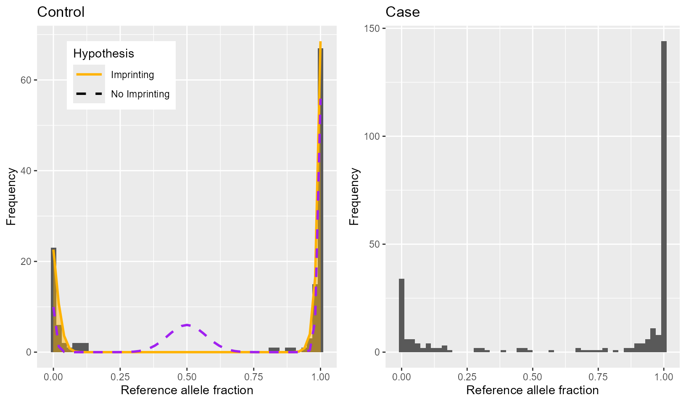

maelstRom_imprinting_tutorial.RmdmaelstRom includes functionalities for the detection of (differential) imprinting, which were previously published by our lab (Goovaerts et al. (2018)). This extreme form of allele-specific expression (ASE) requires a seperate and robust analysis pipeline, as maelstRom’s beta-binomial mixture models (as introduced in the “maelstRom Allelic Dispersion tutorial”) rely on the occurrence of observeable heterozygosity in RNAseq data to study ASE. The latter is absent in fully imprinted loci, and this will results in e.g. numerical failure during maelstRom’s beta-binomial mixture model fit, or otherwise categorization as a low-quality locus. This vignette covers an analysis pipeline retaining these loci and quantifying their degree of (differential) imprinting.
This vignette utilizes the same toy dataset as the “maelstRom Allelic Dispersion tutorial”. As such, the code chunk below re-runs the code found there up to and including “Enabling parallellization”; please consult this tutorial for an in-depth explanation of input data collection and pre-processing.
data("maelstRom", package = "maelstRom")
# maelstRom expects lists:
controlList <- list()
caseList <- list()
for(LOC in unique(ControlCountsToy$Locus)){ # For every locus...
interDF <- ControlCountsToy[ControlCountsToy$Locus==LOC,] # extract nucleotide counts,
controlList[[LOC]] <- interDF # and put it into the list
}
for(LOC in unique(CaseCountsToy$Locus)){ # Do the same for case data
interDF <- CaseCountsToy[CaseCountsToy$Locus==LOC,]
caseList[[LOC]] <- interDF
}
for(n in names(controlList)){
controlList[[n]] <- maelstRom::standard_alleles(controlList[[n]])
}
#> Warning:
#> replacing
#> previous import
#> 'data.table::yearmon'
#> by
#> 'zoo::yearmon'
#> when loading
#> 'maelstRom'
#> Warning:
#> replacing
#> previous import
#> 'data.table::yearqtr'
#> by
#> 'zoo::yearqtr'
#> when loading
#> 'maelstRom'
for(n in names(caseList)){
interDF <- caseList[[n]]
interDF$ref_alleles <- controlList[[n]]$ref_alleles[1]
interDF$ref <- controlList[[n]]$ref[1]
interDF$var <- controlList[[n]]$var[1]
interDF$ref_count <- interDF[,which(colnames(interDF)==interDF$ref[1])]
interDF$var_count <- interDF[,which(colnames(interDF)==interDF$var[1])]
caseList[[n]] <- interDF
}
for(n in names(controlList)){
controlList[[n]] <- maelstRom::prior_filter(controlList[[n]], min_median_cov = 0,
min_nr_samples = 20, checkref_filter = FALSE, prior_allelefreq_filter = FALSE,
min_PriorAlleleFreq = 0)
if(is.null(controlList[[n]])){
# Filter out case data if corresponding control data was removed:
caseList[[n]] <- NULL
}
}
NC <- 1 # Number of Cores, CHANGE THIS for a speed-up when working on a linux machine
NS <- length(controlList)
spl <- c(0, cumsum(rep(floor(NS/NC),NC)+c(rep(1,NS-floor(NS/NC)*NC),
rep(0,NC-NS+floor(NS/NC)*NC))))
ParCTRL <- vector(mode = "list", length=NC)
for(i in 1:NC){ # Put the split input data into a list for parallellisation
ParCTRL[[i]] <- controlList[(spl[i]+1):(spl[i+1])]
}
ParCASE <- vector(mode = "list", length=NC)
for(i in 1:NC){ # Put the split input data into a list for parallellisation
ParCASE[[i]] <- caseList[(spl[i]+1):(spl[i+1])]
}Like in the “maelstRom Allelic Dispersion tutorial”, some
metaparameters need to be calculated (Sequencing Error, and inbreeding
coefficient); the code and explanations here is identical to that
tutorial, with the exception that we also update the control data
(ParCTRL and controlList) using
AllelicMeta_est_par’s output, to include a preliminary
per-locus reference allele fraction estimate among the population’s
genotypes. This can be used as a prior filter during imprinting
detection.
cl <- parallel::makeCluster(getOption("cl.cores", NC))
GenoFinData <- parallel::parLapply(cl, X = ParCTRL, fun = maelstRom::AllelicMeta_est_par,
MinAllele_filt = 0.15, SE_filt = 0.035, NumSamp_filt = 20, MedianCov_filt = 4)
parallel::stopCluster(cl)
# Update control list with a prior allele frequency estimate:
ParCTRL <- lapply(GenoFinData, `[[`, 1)
controlList <- do.call(c, lapply(GenoFinData, `[[`, 1))
SE_vec <- do.call(c, lapply(GenoFinData, `[[`, 2))
F_vec <- do.call(c, lapply(GenoFinData, `[[`, 3))
SEmedian <- median(SE_vec)
Fmedian <- median(F_vec)
cat(paste0(c(SEmedian, Fmedian), ",")) 0.00248190279214063, 0.00872807570598289,
Imprinting analyses in maelstRom are quite different from the analyses up until now in that they don’t rely on beta-binomial modelling and make different assumptions about the data. They are, generally speaking, a bit more robust because imprinting is usually an extreme phenomenon, i.e. heterozygous samples of imprinted loci will almost always “seem like” homozygous samples because one of the alleles has been silenced almost entirely. Partial imprinting can exist and maelstRom can detect it, but this phenomenon is not modelled as thoroughly as the previous ones in this vignette.
First off we assume samples show no AB and are conform
Hardy-Weinberg-Equilibrium while taking imprinting into account, which
is tested by symmetry_gof. It does this by assessing
whether the number of samples with a reference allele fraction > 0.5
(and so also the number with a fraction <= 0.5) is equal to that
expected under HWE assuming no AB using a chi square test. This may seem
kind of heuristic at first and prone to fail if there is even a little
AB, but remember we want to mainly retain imprinted loci, meaning
heterozygous samples should behave as one of both homozygotes (and so
clearly feature reference allele fractions > 0.5 or <=0.5) so this
filter is very fitting for retaining HWE-conform samples that are at the
same time likely to showcase imprinting. A good filter setting is
requiring the p-value to be at least 0.05.
After applying these filters, imprinting_est detects
imprinted loci in the remaining control samples by first assuming an
unshifted binomial mixture model, then splitting up the heterozygous
samples in two separate groups according to a degree of imprinting \(i\) and varying this \(i\) from 0 to 1 in a for-loop, calculating
likelihoods along the way to perform a likelihood-ratio test to check
for differential imprinting (i.e. compare the most likely model with the
non-imprinted one; \(i=0\)). For
completeness, the imprinted PMF is (see Goovaerts
et al. (2018) for a full elaboration):
\[ \small \begin{aligned} \mathrm{PMF}(&counts_{ref}|counts_{total}) = P_{rr} * {\tt pbinom}(x=counts_{ref} \ |\ n=counts_{total}, p=1-SE) \ + \\ & 0.5P_{rv} * {\tt pbinom} \left( x=counts_{ref} \ |\ n=counts_{total}, p=\frac{0.5-\frac{i}{2}}{1-\frac{i}{2}}(1-SE)+\frac{0.5}{1-\frac{i}{2}}SE\right) \ + \\ & 0.5P_{rv} * {\tt pbinom} \left( x=counts_{ref} \ |\ n=counts_{total}, p=\frac{0.5-\frac{i}{2}}{1-\frac{i}{2}}SE+\frac{0.5}{1-\frac{i}{2}}(1-SE)\right) \ + \\ & P_{vv} * {\tt pbinom}(x=counts_{ref} \ |\ n=counts_{total}, p=SE) \end{aligned} \]
After retaining only significantly and sufficiently imprinted loci
(5% FDR level, degree of imprinting at least 0.6 and median degree of
imprinting at least 0.8 for robustness; see
median_imprinting for the latter’s calculation) using the
final_filter function, we use LOItest_logreg()
to test for differential imprinting. More specifically, logistic
regression is used to evaluate whether case samples feature a
significantly higher number of apparently heterozygous samples than
control samples (by considering the least expressed allele as a success;
more details can be found on the function’s help page. Note that the
logistic regression approach takes into account variable coverage
between samples, contrasting our previously published strategy by Goovaerts et al. (2018)). If this is true, it
indicates that a significant fraction of heterozygous samples in tumor
tissue “lost their imprinting” and actually started expressing both
alleles again. We call these loci “differentially imprinted”, as we
reserve the term “loss-of-imprinting” for the phenomenon where
differential imprinting co-occurs with increased total expression,
indicative of re-expression of the silenced allele. Comments in the code
below provide additional insight into the imprinting analysis
pipeline:
# Perform filtering using symmetry_gof()
# Notice we use allelefreq_prel as input in this function, which is the allele frequency as
# estimated by an UNSHIFTED binomial mixture model using AllelicMeta_est() earlier in this
# vignette, which is what symmetry_GOF assumes as well so it's only fitting.
# We also enforce that this allelefreq_prel can not be more extreme than 0.15 or 0.85,
# because detecting imprinting would be very hard otherwise.
ImprData <- controlList
for(LOC in names(controlList)){
if (ImprData[[LOC]]$allelefreq_prel[1] <= 0.15 ||
ImprData[[LOC]]$allelefreq_prel[1] >= (1 - 0.15)) {
ImprData[[LOC]] <- NULL
} else {
ImprData[[LOC]]$sym <- maelstRom::symmetry_gof(ImprData[[LOC]]$ref_count,
ImprData[[LOC]]$var_count, ImprData[[LOC]]$allelefreq_prel[1])
if (ImprData[[LOC]]$sym[1] <= 0.05) {
ImprData[[LOC]] <- NULL
}
}
}
# Detect imprinted control loci
impr_res <- data.frame()
for(LOC in names(ImprData)){
i_results <- maelstRom::imprinting_est(ImprData[[LOC]]$ref_count, ImprData[[LOC]]$var_count,
allelefreq = ImprData[[LOC]]$allelefreq_prel[1], SE = SEmedian, inbr = Fmedian)
# An additional robustified "median imprinting" across samples to be used as possible
# additional filter criterion:
med_imp <- maelstRom::median_imprinting(ImprData[[LOC]]$ref_count, ImprData[[LOC]]$var_count,
allelefreq = ImprData[[LOC]]$allelefreq_prel[1], inbr = Fmedian)
results_z <- data.frame("position" = ImprData[[LOC]]$Locus[1], "LRT" = i_results$LRT,
"p" = i_results$p_value, "estimated.i" = i_results$est_i, "allele.frequency" =
ImprData[[LOC]]$allelefreq_prel[1], "reference" = ImprData[[LOC]]$ref[1], "variant" =
ImprData[[LOC]]$var[1], "med_cov" = ImprData[[LOC]]$coverage[1], "nr_samples" =
nrow(ImprData[[LOC]]), "GOF" = i_results$GOF_likelihood, "symmetry" =
ImprData[[LOC]]$sym[1], "med_impr" = med_imp, stringsAsFactors = FALSE)
impr_res <- rbind(impr_res, results_z)
}
# Retain significantly imprinted loci (5% FDR) utilizing some additional filters, amongst
# which a custom Goodness-Of-Fit which more or less corresponds to a locus' likelihood of
# the imprinted model*coverage; 0.8 is a good cutoff. Other filter criteria are imprinting
# (0.6) and median imprinting (0.8)
impr_res_FIN <- maelstRom::final_filter(data_hash=NULL, impr_res, results_wd=NULL, gof_filt = 0.8,
med_impr_filt = 0.8, i_filt = 0.6, adj_p_filt = 0.05, file_all = FALSE, file_impr = FALSE,
file_all_counts = FALSE, file_impr_counts = FALSE)
# Amongst actually imprinted loci, detect differential expression in case data
pos_impr <- as.character(impr_res_FIN$position)
p_DI_df <- impr_res_FIN
p_DI_df$DI_pval <- 1
for(LOC in pos_impr){
CData <- controlList[[LOC]]
TData <- caseList[[LOC]]
p_DI <- maelstRom::LOItest_logreg(CData$ref_count, CData$var_count,
TData$ref_count, TData$var_count)$p.value
p_DI_df$DI_pval[p_DI_df$position == LOC] <- p_DI
}We can take a look at the loci that are significantly and
sufficiently imprinted (i.e. the output of final_filter
from above):
Locus76, Locus77, Locus172, Locus173, Locus184, Locus185, Locus186,
From this set, a part is actually differentially imprinted in case
samples, which is indicated by the p-value in the DI_pval
column in the p_DI_df dataframe. We can control
loss-of-imprinting detection, for a change, at the 5% FWER level
(actually feasible here due to the small number of actually imprinted
loci remaining, though we’re looking at a small toy dataset here; this
isn’t necessarily the case in larger experiments):
Locus172, Locus173,
We can plot histograms of both the control and case allele fractions;
locus 202 is obviously imprinted in controls and loses a lot of this
imprinting in cases (controls are plotted using
maelstRom_imprintplot to visualize imprinting results, but
since an imprinting-estimation never happens on the case data - we just
detect a change in heterozygosity via logistic regression - we simply
make a histogram for cases instead).
HistCTRL <- maelstRom::maelstRom_imprintplot(controlList[["Locus172"]]$ref_count,
controlList[["Locus172"]]$var_count,
allelefreq = impr_res_FIN$allele.frequency[impr_res_FIN$position=="Locus172"],
impr = impr_res_FIN$estimated.i[impr_res_FIN$position=="Locus172"],
SE = SEmedian, inbr = Fmedian, plot_NoImpr = TRUE, SplitPeaks = FALSE) +
ggplot2::ggtitle("Control")
RatioCASE <- caseList[["Locus172"]]$ref_count /
(caseList[["Locus172"]]$ref_count + caseList[["Locus172"]]$var_count)
CASEDat <- data.frame("Ratio" = RatioCASE)
HistCASE <- ggplot2::ggplot() + ggplot2::geom_histogram(data = CASEDat, ggplot2::aes(Ratio),
bins = 50) + ggplot2::labs(x="Reference allele fraction", y="Frequency") +
ggplot2::ggtitle("Case")
gridExtra::grid.arrange(HistCTRL, HistCASE, ncol=2)
sessionInfo()
#> R version 4.3.3 (2024-02-29 ucrt)
#> Platform: x86_64-w64-mingw32/x64 (64-bit)
#> Running under: Windows 10 x64 (build 19045)
#>
#> Matrix products: default
#>
#>
#> locale:
#> [1] LC_COLLATE=Dutch_Belgium.utf8
#> [2] LC_CTYPE=Dutch_Belgium.utf8
#> [3] LC_MONETARY=Dutch_Belgium.utf8
#> [4] LC_NUMERIC=C
#> [5] LC_TIME=Dutch_Belgium.utf8
#>
#> time zone: Europe/Brussels
#> tzcode source: internal
#>
#> attached base packages:
#> [1] stats
#> [2] graphics
#> [3] grDevices
#> [4] utils
#> [5] datasets
#> [6] methods
#> [7] base
#>
#> loaded via a namespace (and not attached):
#> [1] gtable_0.3.5
#> [2] xfun_0.45
#> [3] bslib_0.7.0
#> [4] ggplot2_3.5.1
#> [5] htmlwidgets_1.6.4
#> [6] lattice_0.22-5
#> [7] numDeriv_2016.8-1.1
#> [8] vctrs_0.6.5
#> [9] tools_4.3.3
#> [10] Rdpack_2.6.1
#> [11] generics_0.1.3
#> [12] parallel_4.3.3
#> [13] rgl_1.3.1
#> [14] tibble_3.2.1
#> [15] fansi_1.0.6
#> [16] highr_0.11
#> [17] pkgconfig_2.0.3
#> [18] data.table_1.16.0
#> [19] ggnewscale_0.5.0
#> [20] desc_1.4.3
#> [21] alabama_2023.1.0
#> [22] lifecycle_1.0.4
#> [23] compiler_4.3.3
#> [24] farver_2.1.2
#> [25] stringr_1.5.1
#> [26] textshaping_0.4.0
#> [27] munsell_0.5.1
#> [28] carData_3.0-5
#> [29] matlib_0.9.6
#> [30] htmltools_0.5.8
#> [31] sass_0.4.9
#> [32] hash_2.2.6.3
#> [33] yaml_2.3.9
#> [34] gmp_0.7-5
#> [35] pillar_1.9.0
#> [36] pkgdown_2.0.9
#> [37] car_3.1-2
#> [38] jquerylib_0.1.4
#> [39] MASS_7.3-60.0.1
#> [40] cachem_1.1.0
#> [41] abind_1.4-5
#> [42] gtools_3.9.5
#> [43] tidyselect_1.2.1
#> [44] digest_0.6.35
#> [45] stringi_1.8.3
#> [46] dplyr_1.1.4
#> [47] purrr_1.0.2
#> [48] labeling_0.4.3
#> [49] fastmap_1.2.0
#> [50] grid_4.3.3
#> [51] colorspace_2.1-0
#> [52] cli_3.6.2
#> [53] magrittr_2.0.3
#> [54] patchwork_1.2.0
#> [55] base64enc_0.1-3
#> [56] utf8_1.2.4
#> [57] withr_3.0.0
#> [58] scales_1.3.0
#> [59] rmarkdown_2.27
#> [60] gridExtra_2.3
#> [61] ragg_1.3.2
#> [62] zoo_1.8-12
#> [63] memoise_2.0.1
#> [64] evaluate_0.24.0
#> [65] knitr_1.48
#> [66] rbibutils_2.2.16
#> [67] rlang_1.1.3
#> [68] Rcpp_1.0.12
#> [69] xtable_1.8-4
#> [70] glue_1.7.0
#> [71] rstudioapi_0.16.0
#> [72] maelstRom_1.1.11
#> [73] jsonlite_1.8.8
#> [74] R6_2.5.1
#> [75] systemfonts_1.1.0
#> [76] fs_1.6.4